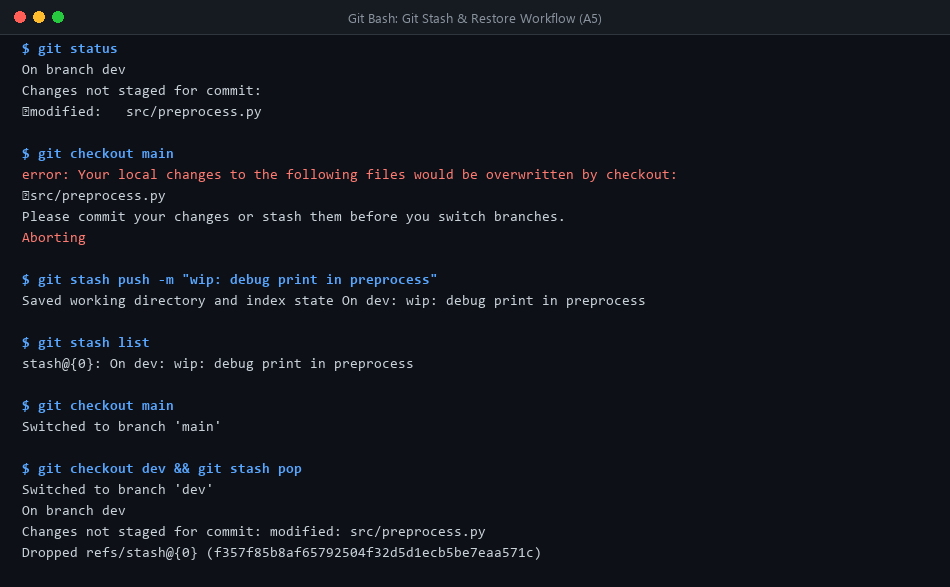
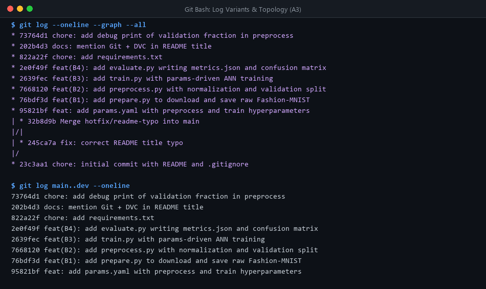
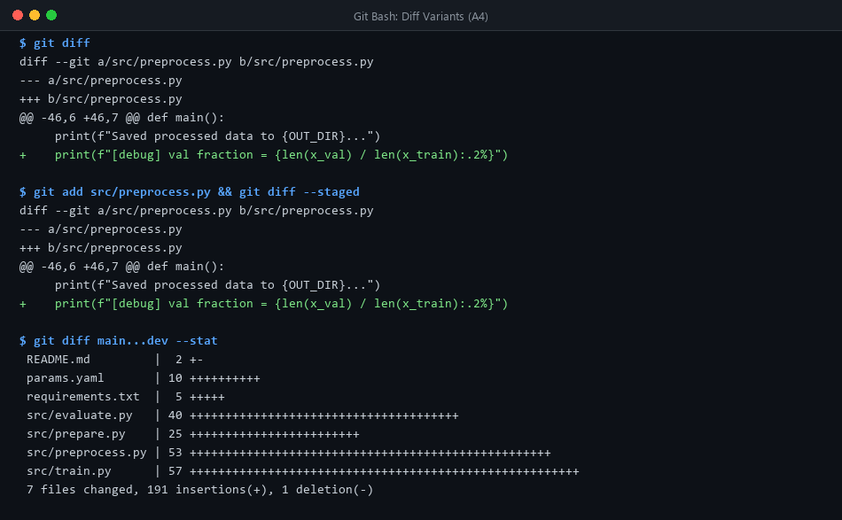
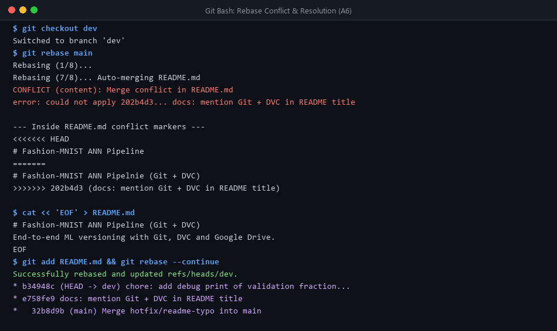
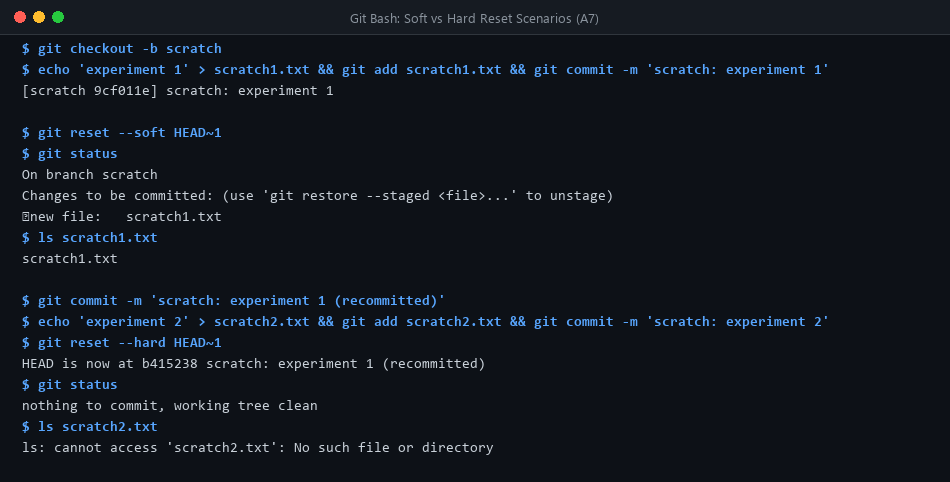
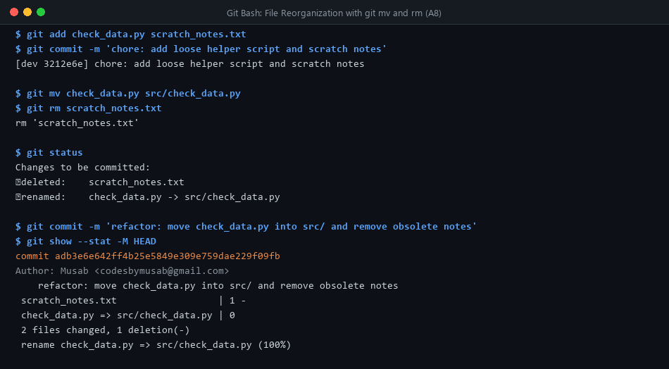
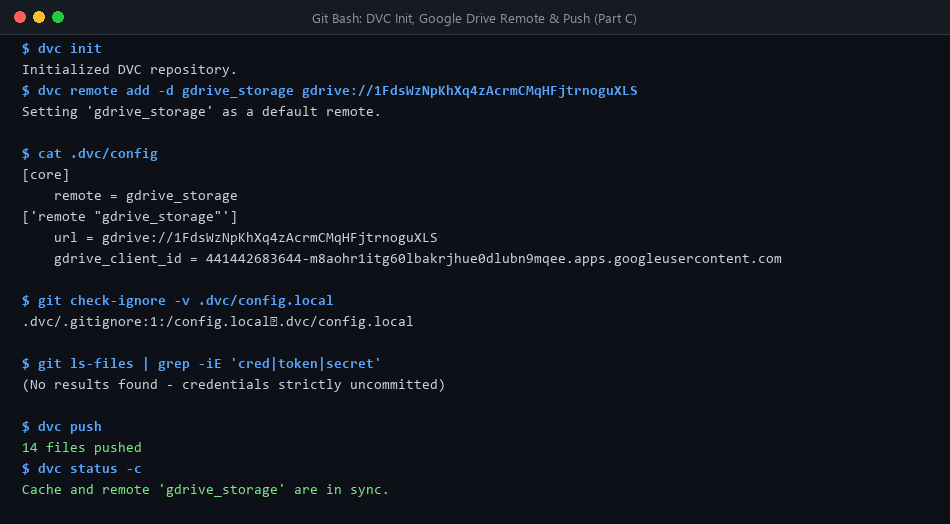
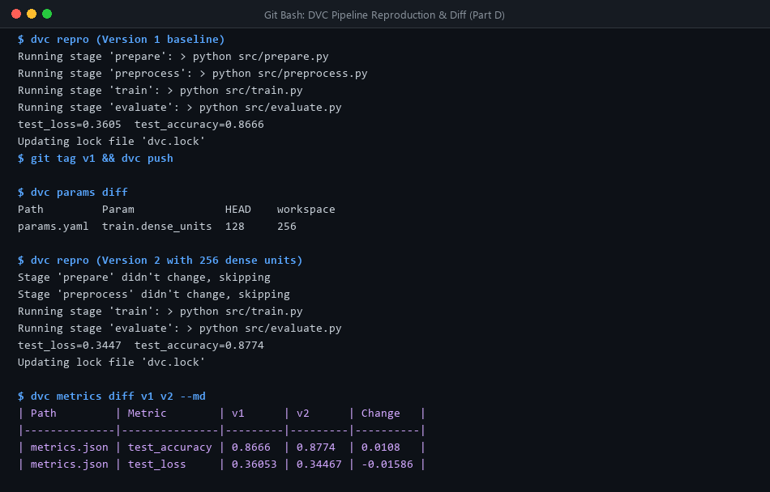
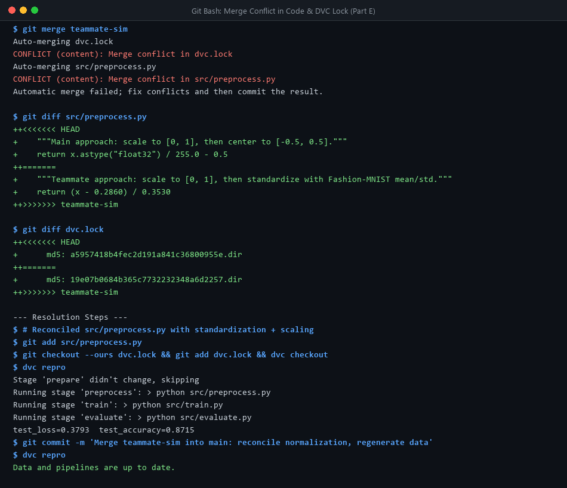
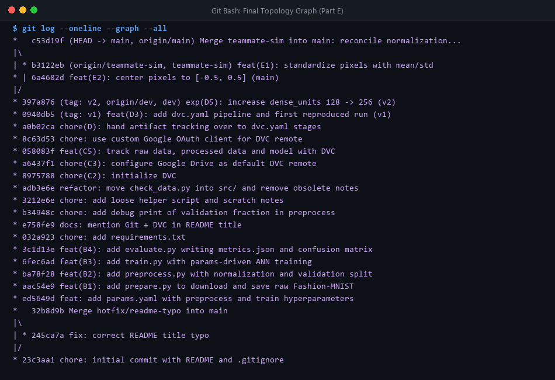

v1 and v2, and demonstrated reproducible merge conflict resolution in code and DVC locks.
Initialized repository with main branch, created README.md with initial typo (Pipelnie), configured .gitignore (ignoring venv/, __pycache__/, *.h5), and created dev branch for iterative development.
Modified src/preprocess.py with a debug print without committing. Git blocked branch switching to main to prevent overwriting uncommitted changes. Stashed work with git stash push, cleanly switched to main, and subsequently restored on dev using git stash pop.


| Command | Unique Value Demonstrated |
|---|---|
git log --oneline --graph --all | Visualizes branch divergence, merges, and relative topology. |
git log --stat -3 | Displays touched files and insertion/deletion counts per commit. |
git log -p -1 | Shows complete line-by-line patch diff of the latest commit. |
git log main..dev | Filters only unmerged commits present on dev but absent from main. |

Two-Dot (main..dev) vs Three-Dot (main...dev) Difference:
• Two-dot diff (git diff main..dev): Directly compares the tip commits of both branches. It incorporates all differences between them, meaning hotfixes or commits made exclusively on main will appear as negative/reversed changes.
• Three-dot diff (git diff main...dev): Compares dev directly against the merge-base (common ancestor commit where dev was branched). It isolates exclusively the work accomplished on dev, filtering out unrelated changes from main.
Branched hotfix/readme-typo from main, corrected the title, and merged with --no-ff to preserve merge history. Rebasing dev onto main encountered a content conflict on README.md line 1. Resolved by retaining both corrected spelling and feature description, creating a clean linear history.


Reset Mechanics: --soft shifts only the HEAD pointer back one commit; changes remain indexed (staged) and preserved on disk. --hard shifts HEAD and resets both index and working tree, permanently discarding changes from disk.
Added helper check_data.py and notes scratch_notes.txt. Executed git mv check_data.py src/check_data.py and git rm scratch_notes.txt. git show --stat -M HEAD verified Git detected a 100% atomic rename rather than a delete/add pair.

Built a 4-stage modular architecture reading from params.yaml:
src/prepare.py: Loads raw Fashion-MNIST, saves deterministic .npy files to data/raw/.src/preprocess.py: Scales pixels to [0, 1], carves 10% stratified validation split, saves to data/processed/.src/train.py: Compiles sequential ANN (Flatten → Dense(ReLU) → Dropout(0.2) → Dense(10, Softmax)). Logs history to history.csv, saves models/model.h5.src/evaluate.py: Evaluates test set, writes metrics.json and saves confusion_matrix.png.Configured Google Drive as remote storage (gdrive://1FdsWzNpKhXq4zAcrmCMqHFjtrnoguXLS). Implemented custom Google Cloud OAuth Desktop Application credentials to avoid public shared-client access blocks.
Credential Security Verification: The client secret was configured with --local, isolating it inside .dvc/config.local. Running git check-ignore -v .dvc/config.local confirms it is ignored by Git. git ls-files | grep -iE 'cred|token|secret' confirms 0 credentials leaked.

Handed artifact tracking from .dvc files to dvc.yaml. Authoring explicit dependencies and parameter locks ensures deterministic stage execution.

| Metric / Param | v1 (128 units) | v2 (256 units) | Observed Change |
|---|---|---|---|
train.dense_units |
128 | 256 | +128 units |
test_accuracy |
0.8666 (86.66%) | 0.8774 (87.74%) | +0.0108 (+1.08%) |
test_loss |
0.36053 | 0.34467 | -0.01586 (Improved) |
Why DVC Skipped Stages during v2 (dvc repro):
DVC tracks content hashes of code, inputs, and parameters in dvc.lock. When train.dense_units changed:
1. prepare & preprocess depend only on raw data and preprocessing params (unchanged) → Skipped.
2. train depends on train.dense_units → Re-executed, producing new model.h5.
3. evaluate depends on model.h5 → Re-executed automatically.
Merged dev to main. Branch teammate-sim implemented Fashion-MNIST standardization: (x - 0.2860) / 0.3530. Branch main concurrently implemented centering: (x / 255.0) - 0.5. Both regenerated data via dvc repro preprocess and pushed to Google Drive.
Merging teammate-sim triggered two conflicts: a code conflict in src/preprocess.py and an md5 collision in dvc.lock for data/processed.

1. Code: Unified both approaches into a shared scale-then-standardize function:
2. Data Lock: Because the merged code generates a new 3rd version of data, cleared conflict markers with git checkout --ours dvc.lock, synced workspace with dvc checkout, and regenerated with dvc repro (final accuracy: 87.15%).
3. Reproducibility Proof: Running dvc repro immediately after merge confirmed all stages print "didn't change, skipping".

main, dev, teammate-simv1 (baseline), v2 (256 units)1FdsWzNpKh...)dvc.yaml & dvc.lock committedmetrics.json & confusion_matrix.png